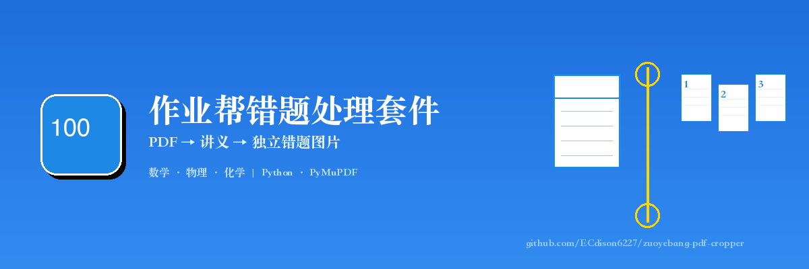
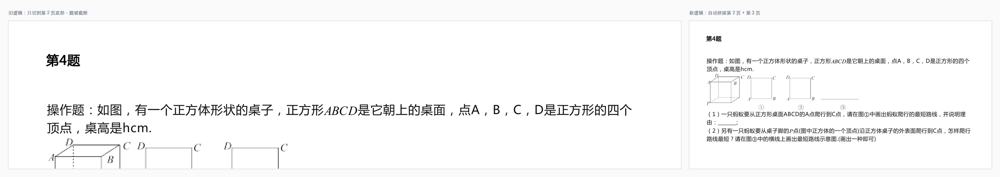
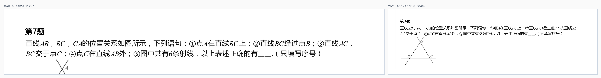
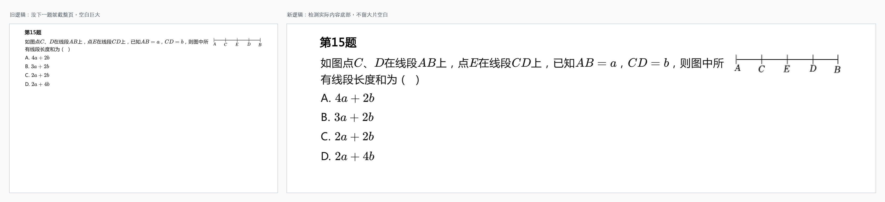

两个 Python skill：处理作业帮错题本 PDF → 生成讲义 → 切分为独立错题图片
📚 知识点笔记 · 🚀 快速开始 · 📖 完整案例 · English
我做小班线上补课，小学、初中的数学、物理、化学，偶尔也会接英语，A level 和 IB 也在做。班小，每个学生错的题不一样，我不想让所有人都刷同一份卷子——会做的题重复做很浪费时间。
我习惯把题分成三类：
这两个 skill 就是服务于三类题的：把作业帮错题本导出的 PDF 先做成讲义，再把每道题单独切出来，按学生拼接成每个人专属的错题本。不会的题反复练，会的题不再重复刷。
目前学科知识点识别主要覆盖 数学、物理、化学。英语识别逻辑写了但还没实测，A level 和 IB 因为太小众暂时没有放出来。（小众赛道的朋友可以直接发邮件交流，邮箱在文末。）
这个仓库是两个 skill 的包，互相独立，也可以串起来用：
| # | Skill | 作用 | 输入 | 输出 |
|---|---|---|---|---|
| 1 | mistake-notebook-processor | 处理作业帮 PDF：去品牌、加页眉页脚、生成带封面的讲义 | 作业帮错题本 PDF | 个性化讲义 PDF |
| 2 | pdf-question-cropper | 按题号把讲义切成独立图片 | 讲义 PDF | 每道题的 PNG + 裁剪报告 |
┌─────────────┐ ┌─────────────────────────────┐ ┌─────────────────┐
│ 作业帮 App │ ──→ │ mistake-notebook-processor │ ──→ │ 个性化讲义 PDF │
│ 导出错题本 │ │ （首次自定义页眉页脚） │ │ │
└─────────────┘ └─────────────────────────────┘ └────────┬────────┘
│
↓
┌─────────────┐ ┌─────────────────┐ ┌─────────────────────────┐
│ 每个学生拿到 │ ←── │ 按学生拼接错题 │ ←── │ pdf-question-cropper │
│ 专属错题本 │ │ （只练不会的） │ │ 切成独立题目图片 │
└─────────────┘ └─────────────────┘ └─────────────────────────┘
💡 不会用？直接把本仓库地址 https://github.com/ECdison6227/zuoyebang-pdf-cropper 丢给 AI，让它帮你装环境、改配置、跑起来。
第一次使用 mistake-notebook-processor 时，建议先打开 process_mistake.py 修改一次页眉、页脚和提示语，改成你自己的信息（比如你的知识点站点、联系方式）。修改一次后，后续每次调用这个 skill 都会沿用这套配置。
| 场景 | 效果 |
|---|---|
| 作业帮单列导出的错题本 PDF | 自动去掉顶部 logo 和底部页码 |
| 已处理过的作业帮讲义 | 自动去掉页眉页脚，识别题型 |
| 跨页题目 | 自动把跨页题拼成一道完整的题 |
| 底部带图的题目 | 接近页底时保守截取，不把图切掉 |
| 最后一题 | 截到实际内容底部，不会截整页空白 |
| 知识点识别 | 自动识别数学/物理/化学/生物等学科知识点，写入讲义封面 |
| 个性化讲义 | 自动生成封面（注意要点、知识点、掌握情况打勾表）+ 页眉提示页脚 |
pip install pymupdf Pillow第一次使用前，先修改 skills/mistake-notebook-processor/process_mistake.py 里的页眉页脚信息：
# 示例默认值
ftr = "edsionc.top | 2014184720@qq.com" # 改成你的站点和联系方式也可以改 SUBJECT_RULES 和 SUBJECT_TIPS 里的提示语。
cd skills/mistake-notebook-processor
python3 process_mistake.py 你的错题本.pdfcd skills/pdf-question-cropper
python3 crop_questions.py 讲义.pdf不指定输出目录时，会在当前目录生成 <PDF名>_题目图片/。
可以。每个 skill 目录下都有独立的 Python 脚本，直接 python3 xxx.py 就能跑。但建议用 skill 的方式调用，因为 skill 里包含了完整的触发条件、配置说明和踩坑记录。
请用 mistake-notebook-processor skill 处理这份作业帮错题本 PDF：
- 去掉顶部 logo 和底部页码
- 生成带封面的讲义，封面包含：整理日期、注意要点、本次知识点、题目掌握情况打勾表
- 页眉格式：日期 | 知识点 | 学科；页脚放我的站点 edsionc.top
- 输出文件名为：学科讲义-日期.pdf
请用 pdf-question-cropper skill 把这份讲义 PDF 按题号切成独立图片：
- 自动识别并跳过封面页
- 跨页题目要自动合并
- 底部带图的题不要把图切掉
- 最后一题只截到实际内容底部
- 输出每道题的 PNG 和裁剪报告
输入文件：examples/输入/数学讲义-20260616.pdf
先生成讲义，再切分：
# 生成讲义（如果用 process_mistake.py 处理原始作业帮 PDF）
python3 skills/mistake-notebook-processor/process_mistake.py examples/输入/数学讲义-20260616.pdf
# 切分题目
python3 skills/pdf-question-cropper/crop_questions.py examples/输入/数学讲义-20260616.pdf examples/输出输出 15 张独立题目图片 + 裁剪报告：
源PDF文件: 数学讲义-20260616.pdf
PDF类型: 已处理讲义
学科: 数学
总页数: 6
跳过封面页: [1]
裁剪题目总数: 15
识别知识点: 立体几何、角、线段、正方形
题目_01.png - 第2页 [第1题]
...
题目_04.png - 第2页 [第4题] (跨页合并: 第2页-第3页)
...
题目_15.png - 第6页 [第15题]全局排序所有题号，看下一页第一个题号离页眉有多远。贴在页顶 → 新题；离页顶很远 → 上一题的续页。

当文本底部离页底很近时，宁可多截一点，把页底也包含进来，避免图被切掉。

扫描文本 spans 找实际内容最底部，只在那下面留 30px 空白。

redaction 物理删除顶部 logo（y=0~68）和底部页码（y=795~842）。学科讲义-日期.pdf。get_text("dict") 的 line/span 级别提取文本，合并同行 span 后匹配题目序号。(page_index, y) 排序。| 常量 | 默认值 | 说明 |
|---|---|---|
ZYB_TOP_BRAND | 68 | 原始作业帮 PDF 顶部 logo 高度 |
ZYB_BOTTOM_FOOTER | 47 | 原始作业帮 PDF 底部页码高度 |
PROCESSED_HEADER | 68 | 已处理讲义页眉高度 |
PROCESSED_FOOTER | 33 | 已处理讲义页脚高度 |
CROSS_PAGE_THRESHOLD | 80 | 跨页判断阈值 |
BOTTOM_MARGIN_THRESHOLD | 120 | 内容底部接近页底阈值 |
get_text("blocks") 导致"第 1 题"和正文被拆成两块，15 题切出 30 张图。改用 get_text("dict") 解决。(1)、① 被当成新题。加了 SUBQUESTION_PATTERN 排除。COVER_PATTERN 跳过。如果你也在做小班教学、错题本整理，欢迎参考这个仓库。
我们的工作室目前招收小学、初中 数学、物理、化学、英语 学生，也做 A level 和 IB 课程。A level 和 IB 的内容比较小众，暂时没有开源出来，但有需求可以联系我交流。
📮 邮箱：2014184720@qq.com
MIT
这是 README 的本地 HTML 预览。确认没问题后，我会推送到 GitHub。